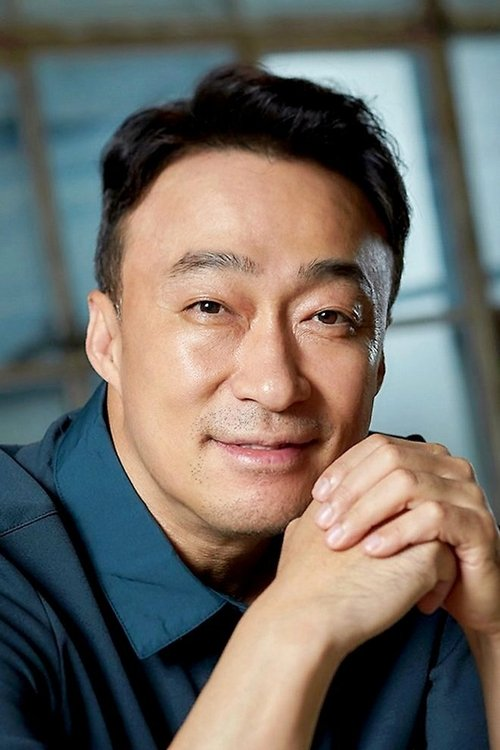
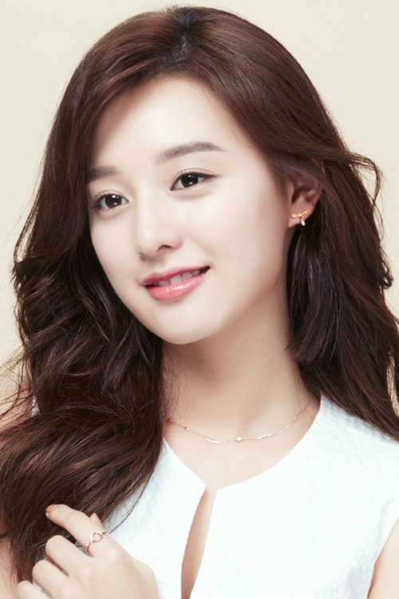
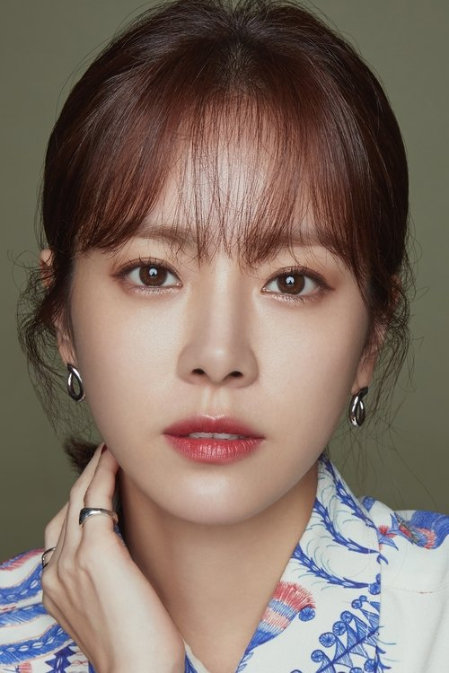
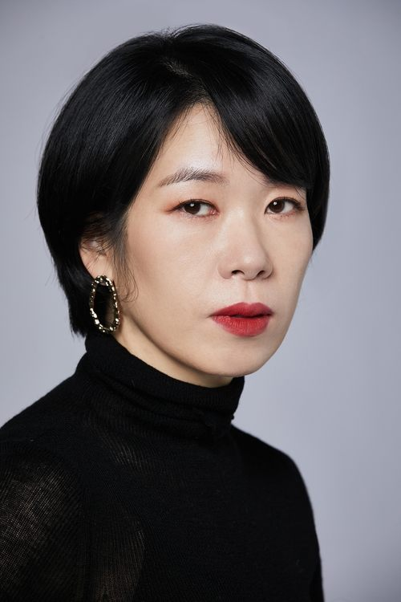

고리오 아버지
A Korean Adaptation of Balzac's Masterpiece
A young law student from the provinces discovers that Seoul's elite run on betrayal when he befriends a ruined father whose chaebol daughters have bled him dry—and a charismatic fixer who offers him a darker path to the top.SCROLL
"Parasite meets King Lear in the glass towers of Gangnam."
Synopsis
Jung Siwoo, a scholarship student from Busan, arrives in Seoul to study law at Korea University. Unable to afford the dormitory, he rents a room in a crumbling gosiwon—a cramped exam-prep dormitory in a forgotten corner of Mapo-gu. Among the residents is Go Yeong-sik, who built a ramyeon empire during Korea's industrialization—the instant noodles that fed a hungry nation. He liquidated everything to fund dowries that bought his daughters entry into Seoul's true elite. Now he lives in a room barely larger than a coffin, surviving on the very ramyeon that made his fortune, while his daughters—ashamed of their "noodle money" origins—dine on Hanwoo beef in Cheongdam-dong and pretend they don't know him.
Through a distant cousin, Siwoo enters high society and begins an affair with Go's younger daughter Delphine, now married to a Hanwha Group executive. Back at the gosiwon, a charismatic former prosecutor named Baek Cheol-min sees Siwoo's hunger and offers him a devil's bargain: help destroy a rival, and Cheol-min will make him rich.
As Siwoo is pulled between desire and ambition, he watches Old Man Go sell his last asset to save his older daughter from scandal. She doesn't even call to thank him. When Go dies alone in his gosiwon room, attended only by Siwoo, his daughters perform grief for cameras at a municipal funeral they refused to fund.
Standing on Namsan Tower, looking down at glittering Seoul, Siwoo makes his choice.
The Players




Click any card to view actor profile and photos →
What It's Really About
헬조선 · "Hell Joseon"
Korea's "dirt spoon vs. gold spoon" reality. The statistical impossibility of upward mobility through merit alone.
효도의 배반
Confucian values weaponized. The father sacrifices everything; the children consume without gratitude.
학벌 사회
Siwoo believed law school would elevate him. Instead, it reveals how rigged the game truly is.
계층의 공간화
Like Parasite, physical space literalizes class. Basement gosiwon vs. penthouse apartments.
Korea is in a moment of intense self-examination about class, family, and the broken promises of economic development.
Balzac wrote Père Goriot in 1835 about a society undergoing the same convulsions: the collapse of old values, the rise of ruthless capitalism, the corruption of family bonds by money.
His Paris is contemporary Seoul.
This is not an adaptation. It's a recognition.